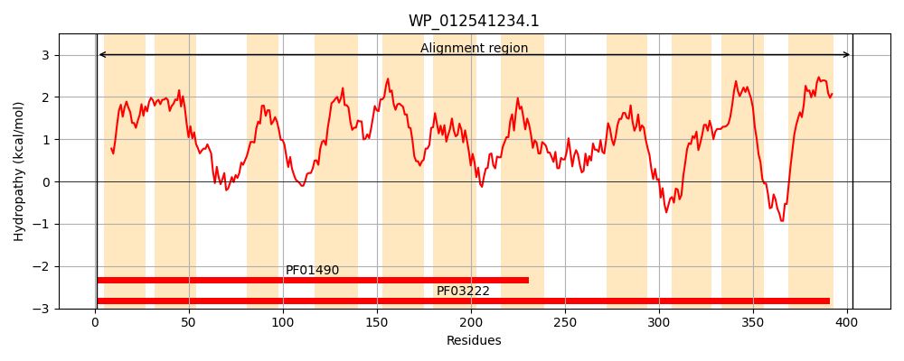
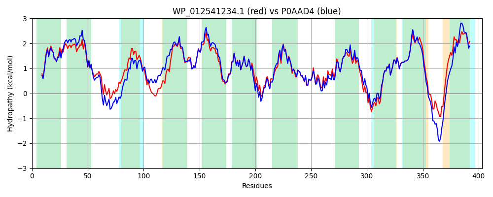

Hit Accession: P0AAD4
Hit TCID: 2.A.42.1.1
Hit Description: gnl|BL_ORD_ID|8655 gnl|TC-DB|P0AAD4|2.A.42.1.1 Tyrosine-specific transport protein - Escherichia coli.
Mach Len: 403
e:0.000000
Query TMS Count : 11
Hit TMS Count: 11
TMS-Overlap Score: 12.150000
Predicted Substrates:CHEBI:9800;tyrosine
BLAST Alignment:
Score: 1638 , Bit scores: 635 bits, E-value: 0.0e+00, Alignment length: 403, Percentage identity: 79
Query: 1 MKNRTLGSILIVAGTTIGAGMLAMPLAAAGVGFAVTLGLLFTLWALMCYTALLLLEVYQHVPADMGLGSLAARYLGRYGQWVTGFCMLFLLYALTAAYISGAGELLASSLNQWLDWQLPPAAGVLLFTALGGAVVCIGTSLVDLFNRFLFSAKIIFLVIMLALLMPHIHQVNLLTLPVEQGLALSAIPVIFTSFGFHGSVPSIVSYLGGDIRKLRRVFIIGSFIPLVAYIFWQLATLGSINPPAFTALLAKNAGLNGLLEAIREVVASPHVELAVHLFADLALATSFLGVSLGLFDYLADVFQRKNSVSGRLQSGAITFLPPVAFALFYPRGFVMALGYAGVALAVLALMLPALLAMKSRRQHPQAAWRVVGGAPALWLVLLCGIGIVAIQFSIVAGLLPAVG 403
MKNRTLGS+ IVAGTTIGAGMLAMPLAAAGVGF+VTL LL LWALMCYTALLLLEVYQHVPAD GLG+LA RYLGRYGQW+TGF M+FL+YALTAAYISGAGELLASS++ W + AGVLLFT + G VVC+GTSLVDLFNRFLFSAKIIFLV+ML LL+PHIH+VNLLTLP++QGLALSAIPVIFTSFGFHGSVPSIVSY+ G+IRKLR VFIIGS IPLVAYIFWQ+ATLGSI+ F LLA +AGLNGLL+A+RE+VASPHVELAVHLFADLALATSFLGV+LGLFDYLAD+FQR N+V GRLQ+GAITFLPP+AFALFYPRGFVMALGYAGVALAVLAL++P+LL +SR+ +PQA +RV GG PAL +V LCGI ++ +QF I AGLLP VG
Sbjct: 1 MKNRTLGSVFIVAGTTIGAGMLAMPLAAAGVGFSVTLILLIGLWALMCYTALLLLEVYQHVPADTGLGTLAKRYLGRYGQWLTGFSMMFLMYALTAAYISGAGELLASSISDWTGISMSATAGVLLFTFVAGGVVCVGTSLVDLFNRFLFSAKIIFLVVMLVLLLPHIHKVNLLTLPLQQGLALSAIPVIFTSFGFHGSVPSIVSYMDGNIRKLRWVFIIGSAIPLVAYIFWQVATLGSIDSTTFMGLLANHAGLNGLLQALREMVASPHVELAVHLFADLALATSFLGVALGLFDYLADLFQRSNTVGGRLQTGAITFLPPLAFALFYPRGFVMALGYAGVALAVLALIIPSLLTWQSRKHNPQAGYRVKGGRPALVVVFLCGIAVIGVQFLIAAGLLPEVG 403 | Protein Hydropathy Plots: |
|---|
|  |  |
Pairwise Alignment-Hydropathy Plot:
|
|---|
|  |